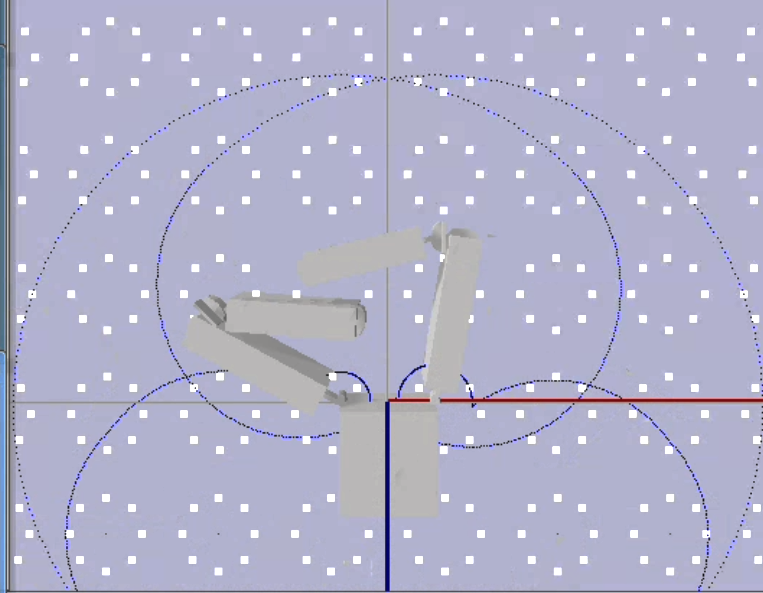

I was given the task of implementing an evolutionary algorithm into preexisting code.
This project generates and sorts through grippers via an evolutionary algorithm. It finds the grippers that can reach the most points according to three different tests.
To view results and further details, click here.
Visualization of one of the tests:
